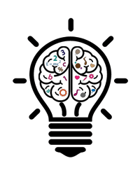
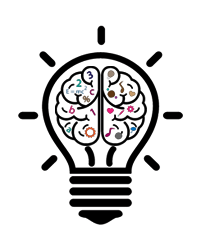

我是个web前端新手，一个新的不能再新的新手。没经验，没技术，没创新，没动力。自我嫌恶，又安于现状，不甘平庸，又害怕行动。
做前端，没那么难，其实就是学，不停的学。
现在技术更新很快，所以眼光要放远，要随时让自己处于虚心学习的状态。不要学会div+css,就觉得很了不起，就不想学其它的技术了，懂div+css的人太多了。现在网上各种教程资料，所以多学点东西，提升自我价值，没错的。
有的人觉得自己学好了，已经很厉害了。html+css够扎实？javascrip能灵活运用？使用jQuery一路到头？DOM，AJAX,JSON,DHTML，有接触？后台一些基本语言，了解？Web前端是永无止境的，没有人能真正的学到头。不要怕累，不要怕伤眼，不要怕动脑，知识是死的，方式是活的，已经爬到食物链的顶端，还有什么是解决不了的吗？相信自己。
其实，还是看你自己。
害怕这样的一种状态。早上起不来，早饭吃不好，麻木的上班，渴望下班，下班后就是脱离任何思想，看电视玩手机，还要熬夜玩，各种拖延症。第二天又是这样，循环不断。我们现在还年轻，有很多的精力，我们需要更多的投资自己。
别在最该奋斗的日子，选择了安逸和享受。
放下你的浮躁，放下你的懒惰，放下你的三分钟热度，闭上你什么都想聊两句的嘴巴，静下心来好好做你该做的事。你的努力是唯一能让你站稳脚跟的依靠。
做你想做的，趁阳光正好。去追逐梦想，趁还年轻。不浪费时间，不挥霍时光，不沉迷过去，不恐惧未来。努力从来不会白费，今日播下的种子，正在你看不见、想不到的某处悄悄地发芽。
你想要好的成绩，但是你不去学习；你想要富裕的生活，但是你不去拼搏奋斗；你想要健康的身体，但是你没能坚持锻炼；你想要称心如意的生活，但是你从未真正的改变过自己。你尽力了，才有资格说自己运气不好。
水再浑浊，只要长久沉淀，依然会分外清澄；人再愚钝，只要足够努力，一样能改写命运，不要愤懑起点太低，那只是我们站立的原点。人生是一场漫长竞赛，有些人笑在开始，有些人却赢在最后。
世界上最难的事，莫过于在热闹之中按兵不动，在诱惑面前不忘初心，别偏激，按兵不动不是让你停滞不前，不忘初心也并非不可以放眼未来，冷静，不是迟钝，沉默，不代表妥协。
入门：
《深入浅出JavaScript》-- Christion Heilmann《JavaScript DOM编程艺术》-- Jeremy Keith
《JavaScript DOM高级程序设计》-- Jeffrey Sambells
进阶：
《ppk谈JavaScript》-- Peter-PaulKoch《精通JavaScript》-- JohnResig
《JavaScript高级程序设计》-- Nicholas C.Zakas
高级：
《JavaScript语言精粹》-- Douglas Crockford《JavaScript设计模式》-- Rossharmes
《Secrets of the JavaScript Ninja》-- JohnResig
《高性能JavaScript》-- NicholasC.Zakas
 

Do what you can, with what you have, where you are.
Life always has two sides, choose yours.